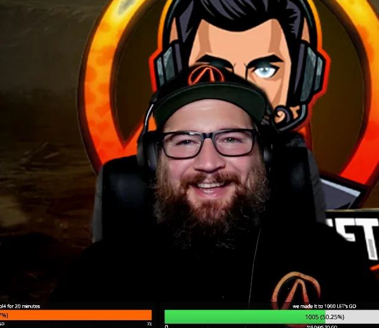

Why this Discord exists
Most people searching for a Borderlands Discord want trading, modded weapons, or a straight answer from someone who knows the game. That is what this server is for.
Join the DiscordAfter you join
Watch while you’re here
Discord is for trading and help. Streams are where the chaos happens live — pick Twitch or YouTube, whichever you already use.

Quick answers
Is this for BL3 and BL4?
Yes. The community covers Borderlands players, trading, modded gear, builds, and discussion as new content changes.
Can I ask for modded weapons?
Yes, but read the rules first and ask in the right place. Include your game, platform, and what you need.
Is GenieBot yours?
No. GenieBot and GZO are third-party. Respect their rules and use their support channels if you need bot help.
Free Borderlands 4 modded weapons
Connect with FunkYouSHiFT on Discord, YouTube, or Twitch for free BL4 gear events and community help.
Explore free BL4 modded gear